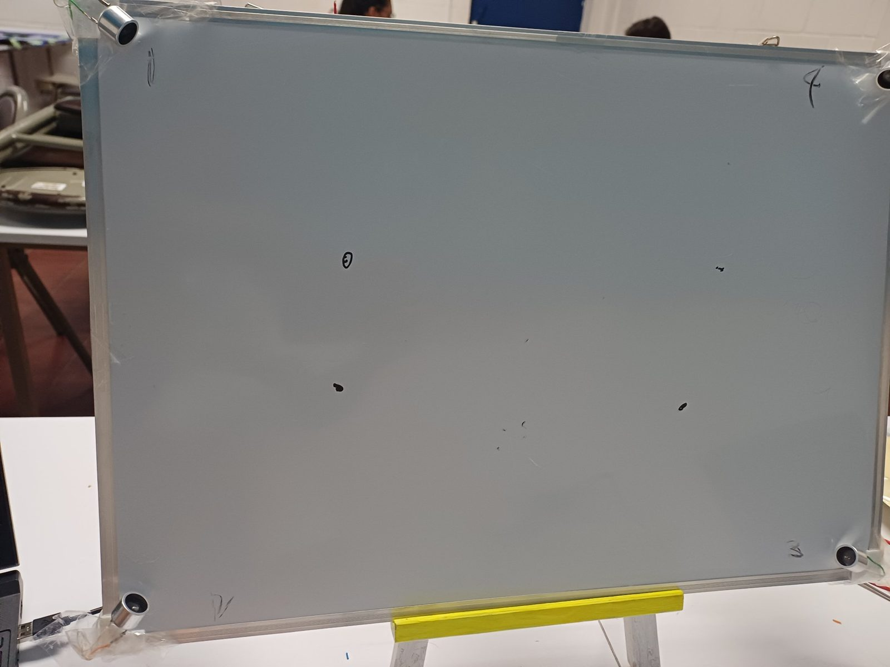
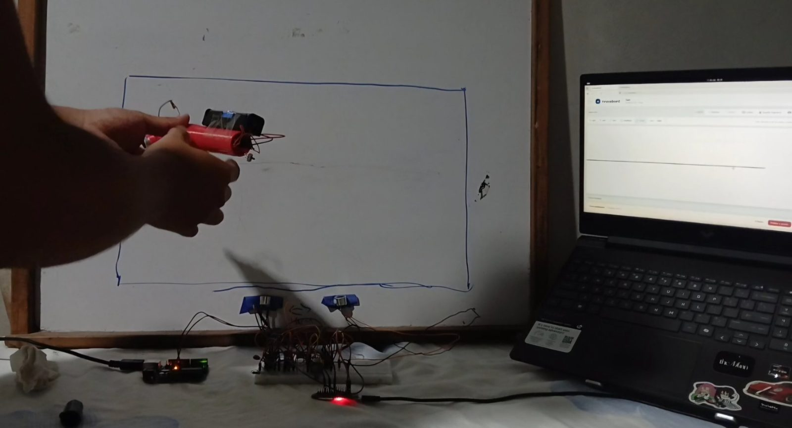
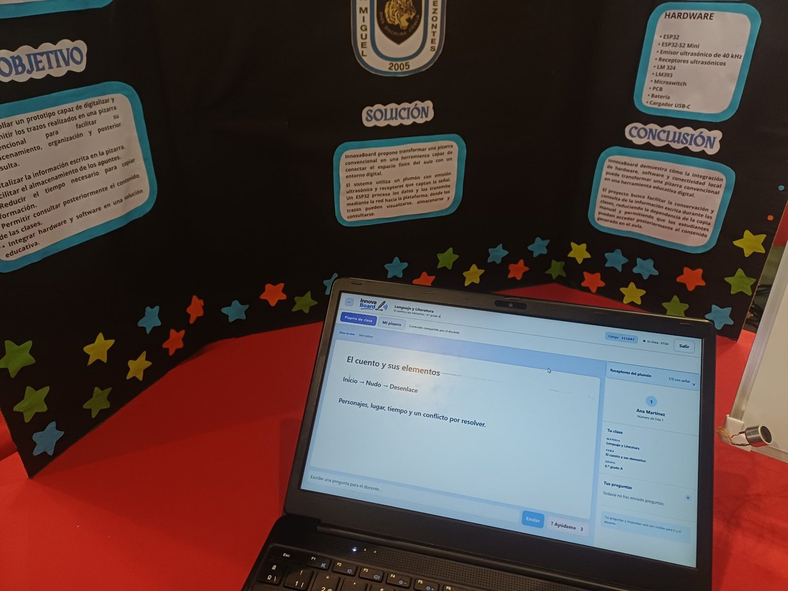
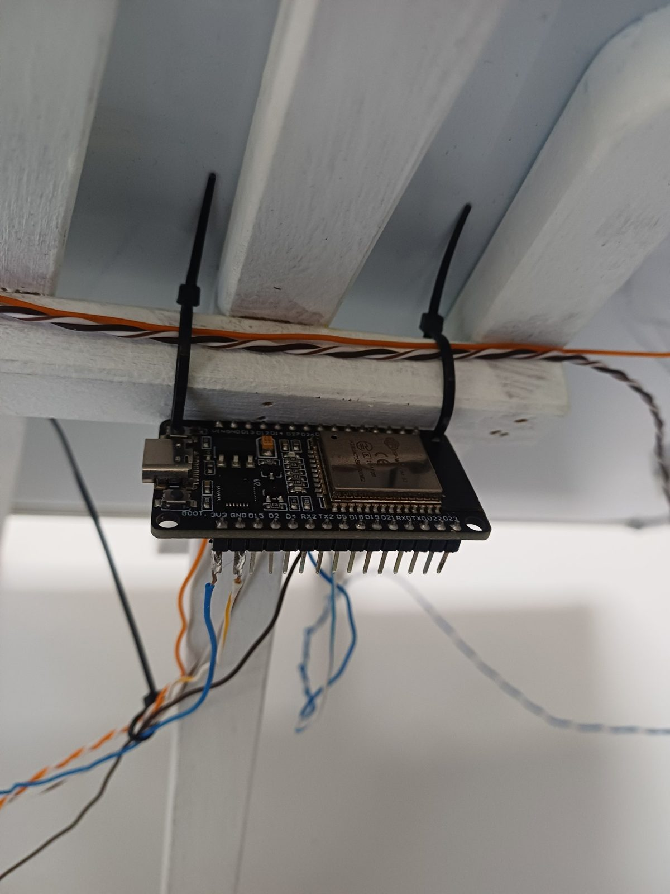
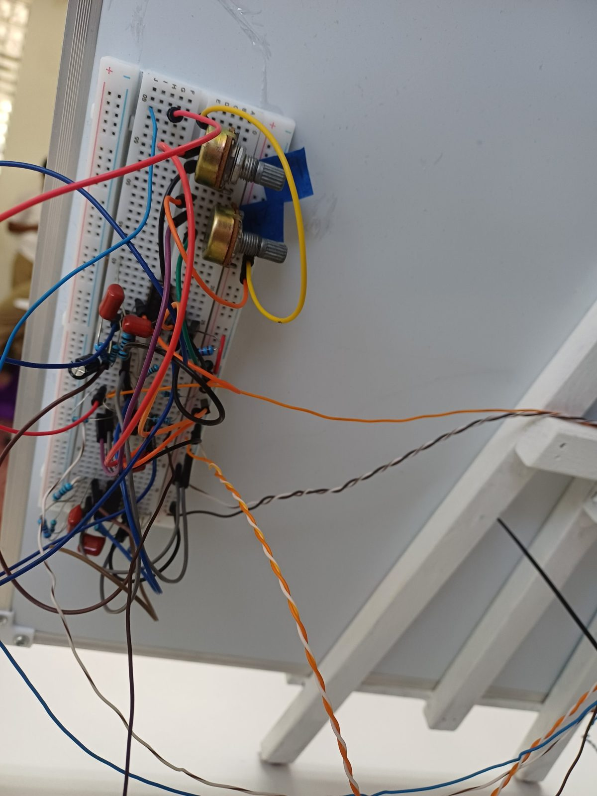

Plumón
Emite ultrasonido mientras se escribe.
"Trazando hacia el futuro"
Fotografías del hardware, sensores y funcionamiento en tiempo real de InnovaBoard.





No todos copiamos al mismo ritmo. Cuando el docente borra la pizarra, parte de la explicación se pierde.
Nuestra idea: el docente sigue usando su pizarra de siempre, y la clase se guarda y se ve en la pantalla de cada estudiante.
Un plumón con emisor ultrasónico y cuatro receptores alrededor de la pizarra.
Emite ultrasonido mientras se escribe.
Cuatro sensores captan la señal desde distintos puntos.
Envía los datos por USB serial al servidor.
Fuimos por etapas: un emisor con un receptor, luego los cuatro canales y, por último, la conexión con la plataforma. También diseñamos una placa y una carcasa.
Detectar la señal no es lo mismo que ubicar bien el trazo. Al inclinar el plumón o tapar la señal con la mano, la detección cambia.
La plataforma permite crear una clase, verla en vivo en cada pantalla y guardarla para repasar después.
Crea una clase y abre la pizarra digital.
Ve lo que se escribe mientras la clase está en marcha.
El contenido queda disponible para repasar.
Tecnologías: Node.js, Socket.IO y SQLite.
No hay que comprar una pizarra nueva.
Dispositivo de captura, una computadora, energía y una red local.
Probarlo en clases reales: contenido conservado, tiempo copiando y facilidad para el docente.